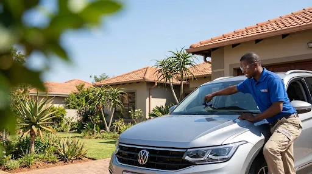

How to prevent a stone chip from spreading into a crack.
A small impact can remain stable for a period or spread unexpectedly after vibration, road movement and sudden temperature changes. Early professional assessment gives you the best chance of retaining the original windscreen.

Keep the damaged area clean and dry
Dirt and moisture can enter the break. Avoid touching the impact point and do not apply household adhesives or improvised fillers. If necessary, place a small piece of clear tape over the dry outer surface until it can be assessed.
Avoid sudden temperature changes
Do not direct very hot air onto cold glass or pour hot water over the windscreen. Rapid expansion and contraction can place additional stress around the damaged area.
Drive carefully
Potholes, rough roads, slamming doors and strong body flex can contribute to spreading. Reduce unnecessary vibration and arrange assessment rather than waiting for the crack to grow.
Park in the shade where practical
Extreme heat can increase glass stress. Covered or shaded parking can help while you wait for professional guidance.
The practical conclusion
Prevention is not about a home repair. It is about keeping the area stable and getting an informed recommendation before a repairable chip becomes a replacement.